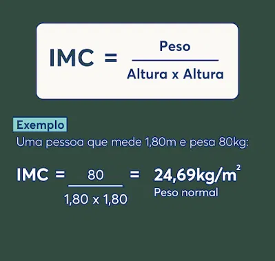

Descubra como o Índice de Massa Corporal (IMC) pode te ajudar a entender melhor a relação entre o seu peso e a sua altura, e como isso impacta na sua saúde.
O Índice de Massa Corporal (IMC) é uma medida internacional usada para calcular se uma pessoa está no peso ideal. Apesar de ser uma ferramenta útil, o IMC tem limitações e não considera fatores como a composição corporal, distribuição de gordura e massa muscular.

Informe seu peso e altura para calcular o seu Índice de Massa Corporal (IMC) e logo em seguida, descubra em qual categoria você se encontra.
O Índice de Massa Corporal (IMC) é uma medida que relaciona o peso e a altura de uma pessoa, sendo utilizado para avaliar se ela está dentro do peso ideal. Abaixo estão as classificações do IMC, de acordo com a Organização Mundial da Saúde (OMS):
IMC menor que 18,5
IMC entre 25 e 29,9
IMC entre 30 e 34,9
IMC entre 35 e 39,9
IMC maior ou igual a 40